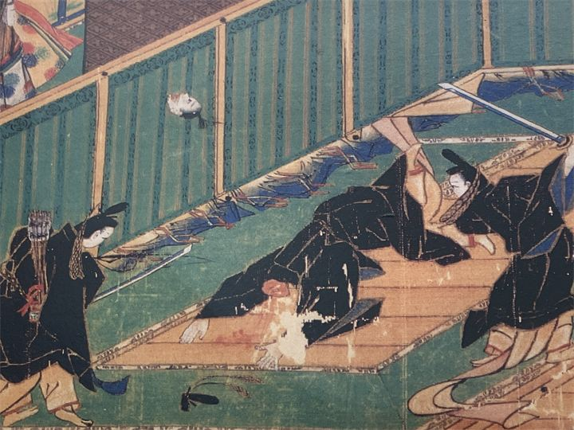
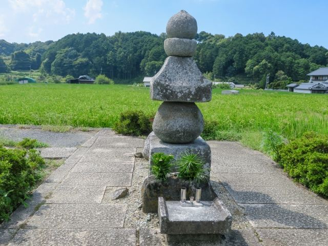
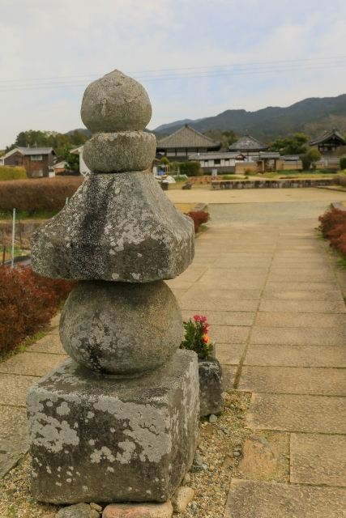

蘇我入鹿の伝説
乙巳の変で討たれた蘇我入鹿の首が飛んできたという伝説が残る場所です。

入鹿の首塚は、乙巳の変（いっしのへん）で命を落とした蘇我入鹿の首が飛鳥寺まで飛んできたという伝説が残る五輪塔です。 飛鳥寺の西側に位置し、飛鳥時代の大きな政変を伝える歴史スポットとして知られています。 静かな田園風景の中にあり、飛鳥の歴史を感じながら訪れることができます。
| 見学時間 | 自由見学 |
|---|---|
| 定休日 | なし |
| 料金 | 無料 |
| 所要時間 | 約10分 |
| 駐車場 |
飛鳥寺前有料駐車場
（徒歩約3分・普通車500円）
奈良県立万葉文化館駐車場 （徒歩約10分・普通車500円） |
| アクセス |
近鉄飛鳥駅から徒歩約25分。 飛鳥寺から徒歩約5分。 飛鳥寺と合わせて巡るのがおすすめです。 |
| 地図 | 地図はこちら |

乙巳の変で討たれた蘇我入鹿の首が飛んできたという伝説が残る場所です。

飛鳥寺や飛鳥宮跡と合わせて巡ることで、古代日本の政治の舞台を感じられます。
蘇我入鹿は、飛鳥時代に大きな権力を持った蘇我氏の人物です。 645年の乙巳の変で中大兄皇子（後の天智天皇）や中臣鎌足らによって討たれ、その首が飛鳥寺まで飛んできたという伝説から、この場所に首塚が建てられたと伝えられています。 現在の五輪塔は、江戸時代以降に整えられたものと考えられています。